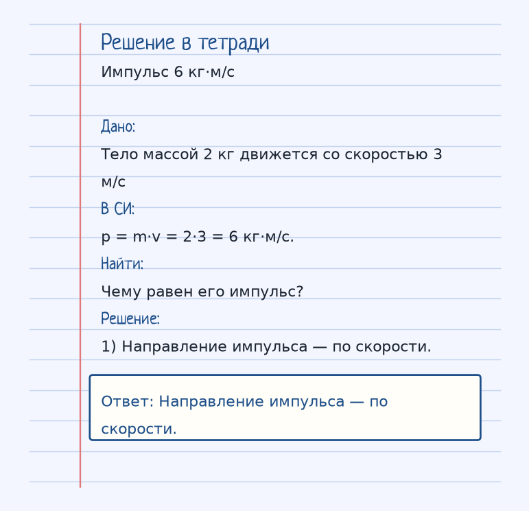
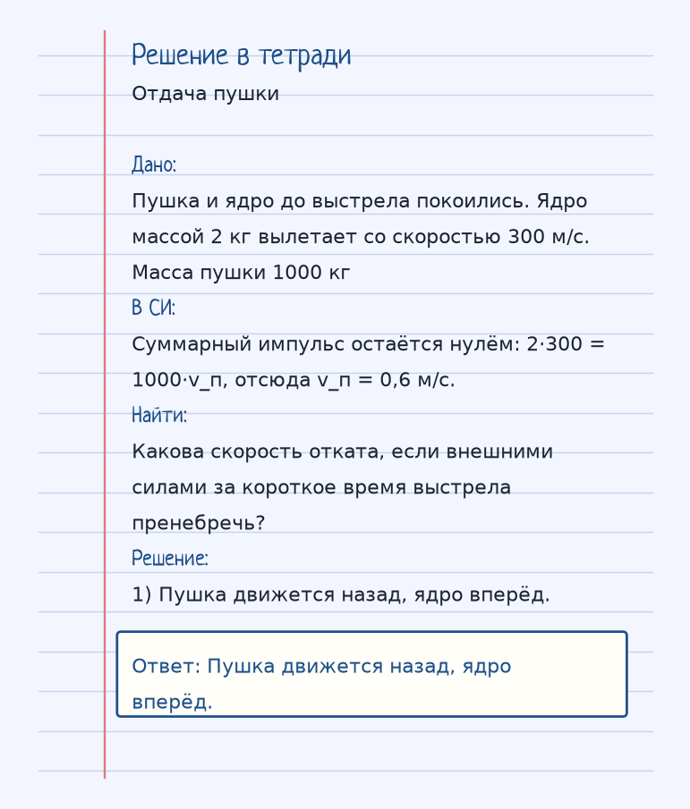

Тема «Импульс тела»: физический смысл, единицы величин, типичные ошибки и два разобранных примера.
Схема к условию.
Физический смысл
Мера механического движения. Чем больше масса и скорость, тем сложнее остановить тело.
Импульс p = m·v — это «запас движения»: остановить тело тем труднее, чем больше масса и чем больше скорость. Направление импульса совпадает с направлением скорости.
В замкнутой системе, где внешние силы отсутствуют или компенсируются, сумма импульсов до взаимодействия равна сумме после. Внутренние силы удара ходят парами по третьему закону и общий импульс не меняют.
Выстрел из пушки — классическая пара: ядро лёгкое и быстрое, пушка тяжёлая и медленная, а произведения m·v по модулю равны, если система была в покое. В задаче карточки внешнего удара нет: просто p = 2 кг · 3 м/с = 6 кг·м/с.
Формула и единицы
p = m · v
p = m·v. Единица — кг·м/с. В замкнутой системе сумма импульсов сохраняется.
Пояснение
Выстрел из пушки. Масса ядра мала, скорость огромна. Масса пушки большая, скорость отдачи маленькая. m_п · v_п = m_я · v_я
Пушка и ядро: маленькая масса на огромной скорости и большая масса на маленькой отдаче. m_п·v_п = m_я·v_я.
Типичные ошибки
Импульс — вектор. «Сумма» в законе сохранения учитывает направления, а не только модули. И закон пишут для замкнутой системы.
Разобранные примеры. Решение каждого открывается отдельно.
Разбор 1
Импульс 6 кг·м/с
Тело массой 2 кг движется со скоростью 3 м/с. Чему равен его импульс?
На схеме только условие.
Порядок записи: данные, единицы СИ, искомая величина, ход решения, ответ.
Дано. Тело массой 2 кг движется со скоростью 3 м/с
В СИ.
p = m·v = 2·3 = 6 кг·м/с.
Найти. Чему равен его импульс?
Решение.
Направление импульса — по скорости.
Направление импульса — по скорости.

Разбор 2
Отдача пушки
Пушка и ядро до выстрела покоились. Ядро массой 2 кг вылетает со скоростью 300 м/с. Масса пушки 1000 кг. Какова скорость отката, если внешними силами за короткое время выстрела пренебречь?
На схеме только условие.
Порядок записи: данные, единицы СИ, искомая величина, ход решения, ответ.
Дано. Пушка и ядро до выстрела покоились. Ядро массой 2 кг вылетает со скоростью 300 м/с. Масса пушки 1000 кг
Найти. Какова скорость отката, если внешними силами за короткое время выстрела пренебречь?
Решение.
Пушка движется назад, ядро вперёд.
Пушка движется назад, ядро вперёд.

Разбор 3
Тележка 5 кг
Тележка массой 5 кг движется со скоростью 4 м/с. Найдите импульс.
На схеме только условие.
Порядок записи: данные, единицы СИ, искомая величина, ход решения, ответ.
Дано. m = 5 кг, v = 4 м/с
В СИ.
p = m v.
Найти. p
Решение.
p = 5·4 = 20 кг·м/с, по направлению скорости.
20 кг·м/с.
Разбор 4
Отдача
Снаряд массой 2 кг вылетает из орудия массой 800 кг со скоростью 400 м/с. До выстрела система покоилась. Найдите скорость отката, внешними силами за время выстрела пренебрегите.
На схеме только условие.
Порядок записи: данные, единицы СИ, искомая величина, ход решения, ответ.
Дано. m = 2 кг, v = 400 м/с, M = 800 кг, начальный импульс 0
В СИ.
Направления противоположны.
Найти. V
Решение.
0 = m v − M V.
V = 2·400/800 = 1 м/с.
1 м/с.
Разбор 5
Сложение
Два тела движутся навстречу: 3 кг со скоростью 4 м/с и 2 кг со скоростью 1 м/с. Найдите модуль суммарного импульса, если за положительное направление взять скорость первого.
На схеме только условие.
Порядок записи: данные, единицы СИ, искомая величина, ход решения, ответ.
Дано. p₁ = 12 кг·м/с, p₂ = −2 кг·м/с
В СИ.
Импульс — вектор.
Найти. p
Решение.
p = 12 − 2 = 10 кг·м/с.
10 кг·м/с в сторону первого тела.
Разбор 6
Осколки
Снаряд массой 6 кг в верхней точке разорвался на части 2 кг и 4 кг. Лёгкая часть полетела вперёд со скоростью 30 м/с относительно земли, до разрыва скорость снаряда была 10 м/с вдоль той же прямой. Найдите скорость тяжёлой части сразу после разрыва. Внешним импульсом за время разрыва пренебрегите.
На схеме только условие.
Порядок записи: данные, единицы СИ, искомая величина, ход решения, ответ.
Дано. M = 6 кг, v = 10 м/с, m₁ = 2 кг, v₁ = 30 м/с, m₂ = 4 кг
В СИ.
p до = p после.
Найти. v₂
Решение.
6·10 = 2·30 + 4 v₂.
60 = 60 + 4 v₂, v₂ = 0.
0.
Разбор 7
Единица
В каких единицах записывают импульс в СИ?
На схеме только условие.
Порядок записи: данные, единицы СИ, искомая величина, ход решения, ответ.